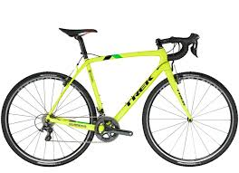
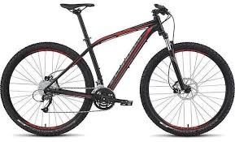
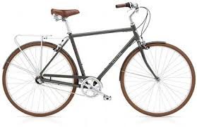

Pure cyclocross speed is the obvious outcome when the legendary Katie Compton teams up with Trek’s brilliant engineers to create a race rig. Trek's Boone Race Shop Limited is built to keep the course warm, crafted with 600 Series OCLV carbon to create a stiff, light platform so you can nab the hole shot, effortlessly shoulder the frame on run-ups, and instantly accelerate for the sprint to the line. The Boone’s IsoSpeed decoupler takes the edge off rough courses, while ensuring phenomenal power transfer. The E2 carbon fork tracks beautifully for off-camber confidence and Bontrager Race wheels are strong, fast, and tubeless ready. A 2 x 11-speed Shimano Ultegra drivetrain gives you quick, positive shifting, no matter the conditions, and Shimano's CX70 cantilevers provide solid stopping power. In the cockpit, a carbon seatmast cap shaves weight, and a bevy of Bontrager components give you lightweight peace of mind when you’re rubbing elbows with the front of the pack. This limited edition Boone boils down everything that is cyclocross into one machine, destined for greatness. (source)
Price: $2,999.99 (Closeout deal!)
Specialized Rockhopper 29 - 2017

Specialized's Rockhopper 29er opens up a whole new world of mountain biking adventure. Its light, agile A1 butted-aluminum frame teams up with a terrain-smoothing Suntour suspension fork and big 29-inch wheels to sail over tricky terrain and keep you pedaling strong. The fun continues with trail-ready components like a 24-speed Shimano drivetrain, powerful Shimano mechanical discs and grippy Specialized tires. You also get Specialized's ergonomic Body Geometry grips and saddle for long-ride comfort on all your adventures. (source)
Price: $469.99 (Closeout deal!)
Electra Loft 3i - 2018

Just enough gussy to get you up. The 3i is an all-weather, low-maintenance commuter with a 3-speed internal gear hub, fenders and a rear rack. It sports the same lightweight, durable alloy frame as its counterparts. Lightweight 6061-T6 aluminum frame - Shimano Nexus internal 3-speed w/freewheel - Shimano Revo twist shifter - Painted alloy fenders - Sealed cartridge bottom bracket - Alloy crankset w/44t alloy chainring and guard - Alloy dual pivot caliper brakes - Double-wall alloy rims - Alloy rear rack - 700 x 38c mixed tread tires (source)